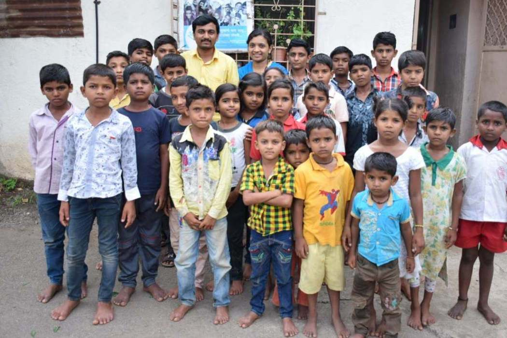

FriendsOfOrg is a collaborative Social Cause Networking website for individuals and groups. We help you to connect with other people who are willing to contribute in similar Social projects like you. If you are helping a NGO and wants to collaborate with other groups who are working with same NGO; FriendsOfOrg is the place for you. Currently we are Focusing on NGOs, Organizations, Clubs, Social Groups or even Individuals in and around Pune City.
If you are looking collaborates in your projects in following orgnizations, contact us to get connected with other groups and people.
